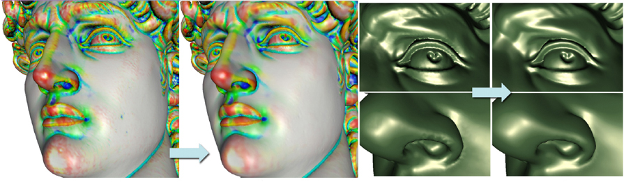
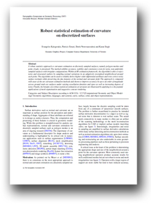
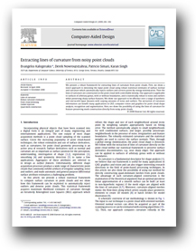

Robust Statistical Estimation of Curvature on Surfaces
People
Abstract
A robust statistics approach to curvature estimation on discretely sampled surfaces. The method exhibits accuracy, stability and consistency even for noisy, non-uniformly sampled surfaces with irregular configurations. Within an M-estimation framework, the algorithm is able to reject noise and structured outliers by sampling normal variations in an adaptively reweighted neighborhood around each point. The algorithm can be used to reliably derive higher order differential attributes and even correct noisy surface normals while preserving the fine features of the normal and curvature field. The approach is compared with state-of-the-art curvature estimation methods and shown to improve accuracy by up to an order of magnitude across ground truth test surfaces under varying tessellation densities and types as well as increasing degrees of noise. The benefits of a robust statistical estimation of curvature are illustrated by applying it to the popular applications of mesh segmentation and suggestive contour rendering.
We also present a robust framework for extracting lines of curvature from point clouds. First, we show a novel approach to denoising the input point cloud using robust statistical estimates of surface normal and curvature which automatically rejects outliers and corrects points by energy minimization. Then the lines of curvature are constructed on the point cloud with controllable density. Our approach is applicable to surfaces of arbitrary genus, with or without boundaries, and is statistically robust to noise and outliers while preserving sharp surface features. We show our approach to be e ective over a range of synthetic and real-world input datasets with varying amounts of noise and outliers. The extraction of curvature information can bene t many applications in CAD, computer vision and graphics for point cloud shape analysis, recognition and segmentation. Here, we show the possibility of using the lines of curvature for feature-preserving mesh construction directly from noisy point clouds.

Paper
CurvatureSGP.pdf, 10.1MBThis paper introduces the robust statistical estimation of curvature on polygon meshes.
Citation
Evangelos Kalogerakis, Patricio Simari, Derek Nowrouzezahrai, Karan Singh, "Robust statistical estimation of curvature on discretized surfaces", Proceedings of the Eurographics/ACM Siggraph Symposium on Geometry Processing (SGP '07), pp. 13-22, Barcelona, Spain, July 4-6 2007
Evangelos Kalogerakis, "Robust statistical estimation of curvature on discretized surfaces" , MSc Thesis, University of Toronto, 2006
Bibtex

Paper
CurvatureCAD.pdf, 13.7MBThis article focuses on the robust statistical estimation of curvature on point clouds, their curvature-driven denoising and the extraction of lines of curvature from them.
Citation
Evangelos Kalogerakis, Derek Nowrouzezahrai, Patricio Simari, Karan Singh, "Extracting lines of curvature from noisy point clouds" , Special Issue of the Computer-Aided Design journal on Point-Based Computational Techniques, Volume 41, Number 4 (April 2009), pp. 282-292
Bibtex
Presentation
SGP_Presentation.ppt, 5.46MB.Presented in the SGP conference.
Demo executable
robust_curvature.zip, 1.43MB.This Windows demo executable program estimates curvature for triangle meshes based on the method presented in the SGP paper (see above). Please cite the SGP paper if you use this executable for your project.
This research prototype supports OFF files only. You can get some help by typing "CurvatureX3 -?" (see also the FAQ section below). A quick example of use: "CurvatureX3 -dc -v mesh.off" (it will also compute derivatives of curvature with verbose output and results are written in curv.txt). If the mesh is completely noiseless, you may also want to try "CurvatureX3 -n mesh.off" for faster results. The implementation is slow as it is not optimized and is also based on the CGAL library. It may need several minutes and lots of memory to run for e.g. a 1M faces mesh. There are lots of improvements that I may perform in the future: a faster and less memory-consuming implementation (e.g., based on the Trimesh2 library), an initial guess based on a one-ring discrete curvature estimate that may preserve sharp edges better, bugs correction etc.
Frequently Asked Questions:
- Question: The program does not run.
- Answer: Make sure you have BLAS.dll and LAPACK.dll in the same folder with the executable. Also try to install the Microsoft Visual C++ Redistributable Package.
- Question: It says "Loaded mesh is empty or file format is not supported".
- Answer: Make sure your loaded mesh is text OFF format. Make sure your mesh is manifold.
- Question: Where are the results?
- Answer: If you have not specified another output file name, they are in the curv.txt (in the same directory with the executable)
- Question: I want to correct the mesh normals and principal curvature directions. How can I do it?
- Answer: Include the '-r' parameter (it's not used by default)
- Question: How do I compute the derivatives of curvatures?
- Answer: Include the '-dc' parameter (it's not used by default)
- Question: The method does not seem to produce very accurate results for non-noisy meshes.
- Answer: Try "CurvatureX3 -n your_mesh.off"
- Question: Why is it so slow?
- Answer: It is because of the local optimization nature of the algorithm and some data structure overheads of the current beta version of the executable. If it is too slow for you, and you don't care very much about accuracy, you can limit the number of iterations (e.g use '-i=10' or '-i=5'). Also try to use light (edge-based) sampling (use parameter '-l'). The implementation is not that optimized as well.
- Question: Does your method have any statistical assumptions?
- Answer: Yes, gaussian noise on points and normals.
- Question: Does it work with other types of noise?
- Answer: For laplacian noise, I saw again good behavior. In general, feel free to test it for various sampling and noise conditions.
- Question: The program crashed. I found a bug. Something is wrong. I am puzzled by something.
- Answer: The program is only a research prototype and is for demonstrative purposes. You may also contact the main author: kalo@dgp.toronto.edu
- Question: I am not satisfied by the results of your method.
- Answer: The executable is beta version; it may also be still buggy. Also, try "CurvatureX3 -?" for help to check all the options..
Acknowledgements
We thank Eitan Grinspun for providing us with tessellations for our test surfaces, Guillaume Lavoué for the executable of his method and Ryan Schmidt for the implicit surface dog model. We thank Nigel Morris and Kyros Kutulakos for the fish point cloud. We also thank Hanson Robotics for the Einstein's head dataset. We acknowledge the AIM@SHAPE 3D library and its authors for the use of 3D models and point clouds. We would like to thank Aaron Hertzmann and Eugene Fiume for their useful comments on the paper. We acknowledge the CGAL library which was used in our demo implementation.
This work has been funded by the National Sciences and Engineering Research Council of Canada (NSERC), the Ontario Ministry of Education and Training and the Canadian Research Network for Mathematics of Information Technology and Complex Systems (MITACS).